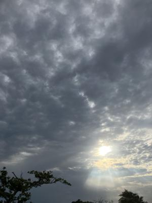

うるがいの話 ある日
最新: 不動産の相談について【うるがいの話 ある日】とは 一日だけのプログです
『うるがいの話』の最新一日だけのプログで、通信料が少なく経済的だ。カニの画像をクリックすると全ての日付が載る『うるがいの話』サイトを表示します
|
|
【うるがいの話】 うるがい(ｳﾙｶﾞｲ urugai)とは、『もずくがに』の名前でとても大きくなります。 |
|---|---|
|
|
【カミマヤーの話】 猫のことを方言でマヤーといいます。カミマヤー（kamimayaa）とは、神の猫のことです。 |
|
【たながぁの音楽】 たながぁ（ﾀﾅｶﾞｰ tanagaa）とは手長えびのことで、何種類かあり大きいのは車 エビぐらいになります。 |

|
【ぶながぁの話】 ぶながぁ(ﾌﾞﾅｶﾞｰ bunagaa)とは、赤い髪の毛、赤い身体、そして身長は１ｍ２０ｃｍ ぐらい、川の蟹を食べているの目撃された。場所は沖縄県国頭郡大宜味村のと ある村僕の隣近所に住んでいる爺さんから、聞いた話です。 |
|
|
【ギーマの話】 ギーマ(giima)とは、山原の里山に咲くスズランに似た、 花を付けます。実は食べられます、 気が付くと口の周りが紫になっています。 |
2025年04月19日 (土）不動産の相談について
15:10

ヨメが、相談した不動産の応対がいまいちなのです。２月に貰った
名刺を頼りに、本命の不動産にメールをする。
２月２７日(木)に突然お邪魔した者の不動産売却の相談について
株式会社小さな不動産
フク様
２月２７日(木)に突然お邪魔した
ウルガイと申します。
その節は、お世話になりました。
その後、その日に不動産とは絶縁しました。
先週の月曜日に、ヨメがテレビで
見かけた下記へ無料の査定を相談したところ、
相続・資産活用のご相談は●●●●●●事務所｜△△△△△△
https://■■■■■■.com/
先週の木曜日に回答予定があったのですが・・
先ほど、電話すると連絡を忘れていたようで
なにやら、扱えない不動産とか・・
どこかの不動産と相談の上
改めて、４月２８日（月）に一万千円の
手数料を支払い、相談する手筈になりました。
という、いきさつでございます。
改めて、
ヨメを同席の上
フクさんの都合のよい
来週に売却の相談に
伺いたく対応のほど
宜しくお願いします。
物件情報 ・・・・・
メールから、返信が届きました。来週相談することになりました。
テレビの不動産への相談は、意味がないと思うのですが・・・・。